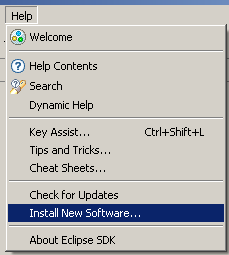
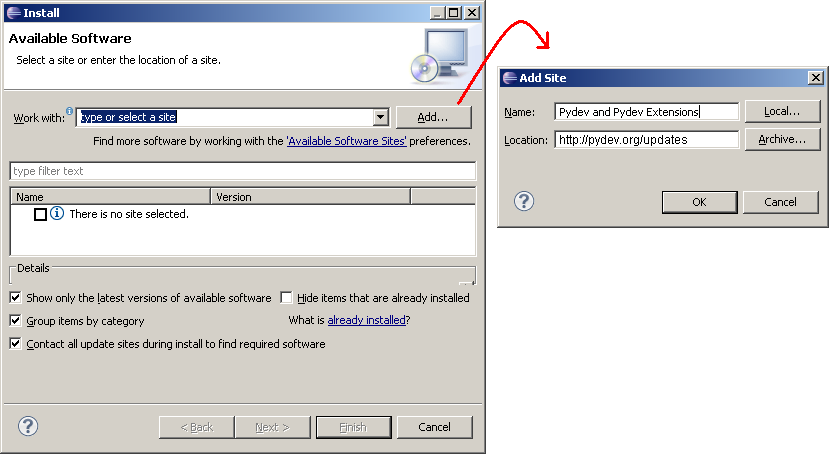
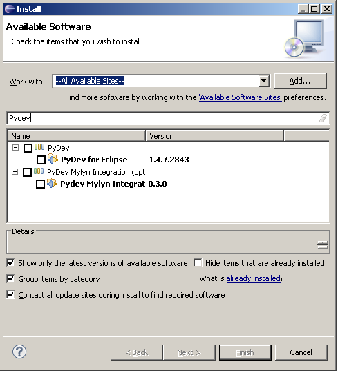
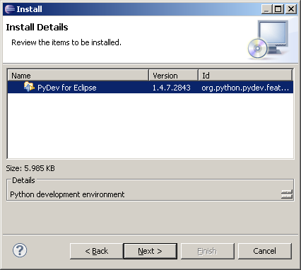
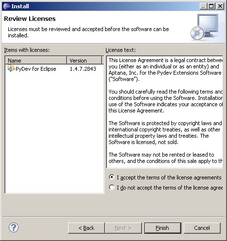

Installing with the zip file
The available locations for the zip files are:
After downloading the zip file:
Eclipse 3.4 onwards
Extract the contents of the zip file in the eclipse/dropins folder and restart Eclipse.
Before Eclipse 3.4
Extract the contents of the zip file on top of Eclipse, making sure the plugins folder is extracted on top of the eclipse/plugins folder and the features is on top of the eclipse/features folder. After that, restart Eclipse with the '-clean' flag, so that Eclipse finds out about it.
\\\\\\\\\\\\\\\\\\\\\\\\\\\\\\\\\\\\\\\\\\\\\\\\\\\\\\\\\\\\\\\\\\\\\\\\\\\\\\\\\\\\\\\\\\\\\\\\\\\\\\\\\\\\\\\\\\\\\\\\\\\\\\\\\\\\
PyDev already comes preinstalled in LiClipse, so, this step can be skipped (note that if LiClipse is used, PyDev cannot be installed or update separately, as it must always be updated as a whole).
PyDev requires java 8 and Eclipse 4.6 (Neon) in order to run.
If you don't have java 8, the update process may appear to succeed, but PyDev will simply not show in the target installation. Please double-check if you're using a java 8 vm in about > installation details > configuration before trying to install PyDev.
Need to use older Eclipse/Java
If you need to use an older version of Eclipse/Java, below is the latest PyDev version to be used based on your requisites.
The first thing to choose before the install is a folder where you have permissions to write (otherwise, remember to install Eclipse running as an Administrator and remember to run as an Administrator whenever any plugin needs to be updated).
Also, it seems Eclipse 3.6.0 has some issues installing in shared locations (in any OS). An example of such a location would be the Program Files directory on Windows (see: https://bugs.eclipse.org/bugs/show_bug.cgi?id=322929), so, please use at least 3.6.1 if planning to install Eclipse/PyDev on a shared location.
PyDev is built with a self-signed certificate, which means that when installed a dialog will be opened to ask if you trust the certificate (which should be OK for most users).
Now, if you don't want that dialog to appear, it's possible to import the certificate before starting the installation process (this is actually a requirement for those that want to install PyDev from the command line because of a bug in the Eclipse p2 director).
The first step for that is downloading the PyDev certificate.
The second step is discovering the java being used in Eclipse: go to Help > About > Installation details and look for 'java.home'
Then to actually import it, in the command line, go to the Eclipse 'java.home' directory and execute
bin/keytool.exe -import -file pydev_certificate.cer -keystore lib/security/cacerts
Note that if you never did anything here, your password when requested should be changeit
Reference: http://download.oracle.com/javase/1.4.2/docs/tooldocs/solaris/keytool.html#cacerts
Installing with the update site
Note: Instructions are targeted at Eclipse 3.5 onwards
To install PyDev and PyDev Extensions using the Eclipse Update Manager, you need to use the Help > Install New Software... menu (note that in older versions, this would be the 'Find and Install' menu).

In the next screen, add the update site(s) you want to work with ( See below for a list with the available update sites).

Main:
Nightly builds:
After entering the update sites, select the update site you entered or select "All available sites" and add a filter for PyDev, so that it shows the contents of all the update sites that have PyDev, then select what you want to install and click 'Next'.

Then, UNCHECK the 'Contact all update sites during install to find required software' and press 'Next' again to confirm your selection.

And finally, read the license agreement and if you accept, select the accept radio button and click 'Finish'.

At that point, Eclipse should automatically download the plugin contents and present you to a dialog asking if you want to restart (to which you should say yes).
If you have any problem at this point with a message such as:
An error occurred while collecting items to be installed
No repository found containing:
org.python.pydev/osgi.bundle/1.4.7.2843
No repository found containing:
org.python.pydev.ast/osgi.bundle/1.4.7.2843
that might indicate that the mirror you selected is having some network problem at that time, so, please follow the same steps with another mirror.
The available locations for the zip files are:
After downloading the zip file:
Eclipse 3.4 onwards
Extract the contents of the zip file in the eclipse/dropins folder and restart Eclipse.
Before Eclipse 3.4
Extract the contents of the zip file on top of Eclipse, making sure the plugins folder is extracted on top of the eclipse/plugins folder and the features is on top of the eclipse/features folder. After that, restart Eclipse with the '-clean' flag, so that Eclipse finds out about it.
You can verify if it is correctly installed going to the menu 'window > preferences' and checking if there is a PyDev item under that.
PyDev does not appear after install!
Well, the main issue at this time is that PyDev requires Java 8 in order to run. So, if you don't want to support PyDev by going the LiClipse route (which is mostly a PyDev standalone plus some goodies), you may have to go through some loops to make sure that you're actually using Java 8 to run Eclipse/PyDev (as explained below).
Make sure you download/install the latest Java 8 JRE or JDK, try restarting to see if it got it automatically.
I.e.: in help > about > installation details > configuration check if it's actually using the java 8 version you pointed at.
If it didn't get it automatically, follow the instructions from:
http://wiki.eclipse.org/Eclipse.ini to add the -vm argument to eclipse.ini on "Specifying the JVM" to specify the java 8 vm.
Note on Mac OS: You can use the command "/usr/libexec/java_home -v 1.8" to get the base path for the JVM (though you also need to append "/bin/java" to the output of said command to the -vm arg in eclipse.ini).
Follow the instructons below if at any time you wish to stop using the PyDev plugin (or any other Eclipse plugin):
Eclipse 3.5 onwards
If you installed with the update site, go to the menu help > about > installation details then on the Installed Software tab, select the plugins you want to uninstall and click Uninstall.
If you installed with the zip file, just remove the com.python.pydev and org.python.pydev features and plugins from the dropins folder.
Before Eclipse 3.4
Go to the menu help > software updates > manage configuration, select the plugin and click 'disable', then, you have to restart Eclipse, go to the same place again and then click on 'remove' (note that you have a button in the menu that enables you to see the 'disabled' features).
Eclipse sometimes is not able to correctly get the plugin, from the update site but will do no checking on whether it is really correct (no md5 checking), and when this happens, you'll usually get a ClassNotFoundException (similar to the example below).
When that happens, you should uninstall it and reinstall again with the update site... if that still fails, you could try to get the zip files, as it will at least give you a warning when it is corrupt.
Note that the chance of the files being corrupt in the server is pretty low, as that's something that's always checked in a new release – but if you're suspicious about it, please ask in the forum, so that it can be double-checked.
Also, there have been reports with that error where the only solution that has been consistent has been removing all previous versions of pydev and then installing the latest version.
EXAMPLE
Unable to create this part due to an internal error. Reason for the failure: The editor class could not be instantiated. This usually indicates that the editor's class name was mistyped in plugin.xml.
java.lang.ClassNotFoundException: org.python.pydev.editor.PyEdit
at
org.eclipse.osgi.framework.internal.core.BundleLoader.findClass(BundleLoader.java:405)
at
org.eclipse.osgi.framework.internal.core.BundleLoader.findClass(BundleLoader.java:350)
at
org.eclipse.osgi.framework.adaptor.core.AbstractClassLoader.loadClass(AbstractClassLoader.java:78)
at java.lang.ClassLoader.loadClass(ClassLoader.java:235) at
org.eclipse.osgi.framework.internal.core.BundleLoader.loadClass(BundleLoader.java:275)